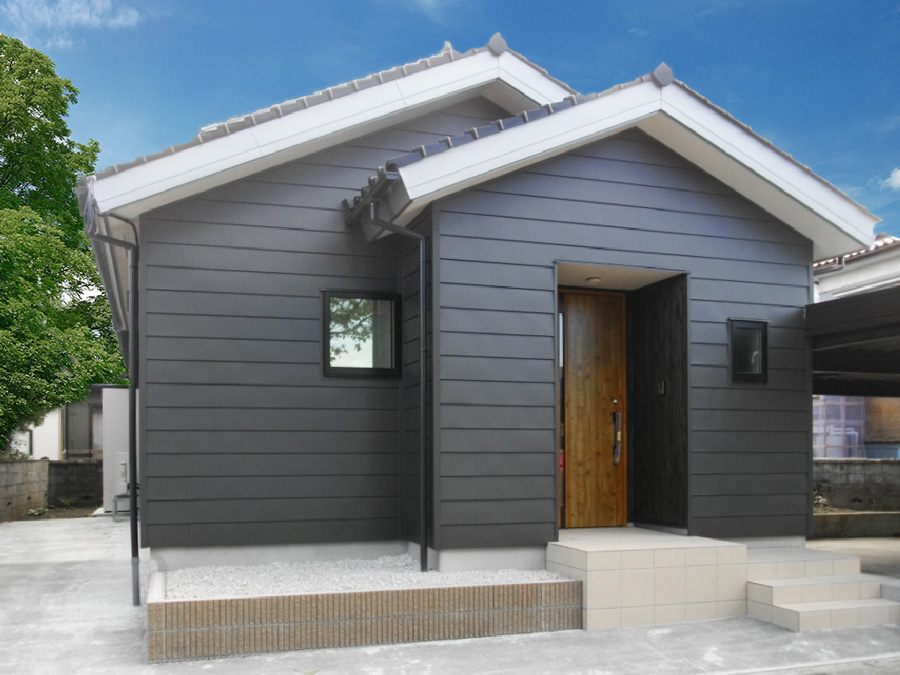
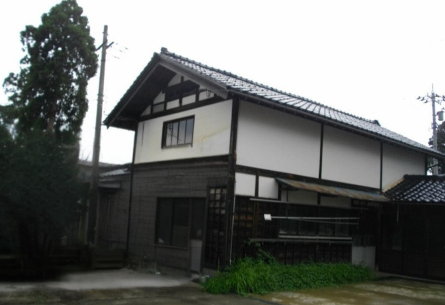
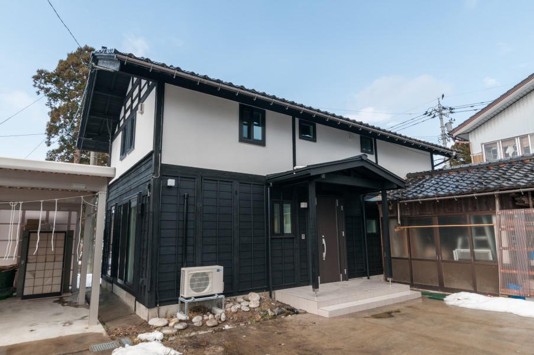
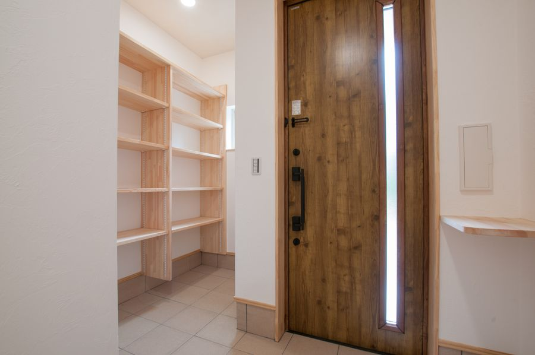

水まわり・内装を整えたい
キッチンや浴室などの使い勝手、床・壁の傷みが気になる方へ。設備や配管、下地の状況を確認し、必要な工事をご相談します。
RENOVATION / FUJISOU AINOS
リフォーム・リノベーション
残したいものを、大切に。
変えたいところを、暮らしに合わせて。
今ある住まいの可能性を、一緒に考えます。

YOUR HOME, YOUR NEXT CHAPTER
ご家族の人数、毎日の動線、これからの住み方。お困りごとと残したいものを伺い、建物の状態に合わせて工事の範囲や優先順位を整理します。
キッチンや浴室などの使い勝手、床・壁の傷みが気になる方へ。設備や配管、下地の状況を確認し、必要な工事をご相談します。
家族構成の変化や、使っていない部屋の見直しに。動線や収納、空間のつながりを、建物の構造や設備の位置と合わせて考えます。
長く住んだ家、相続した住まい、中古住宅の購入と改修など。建物の現状と総予算を確認し、新築も含めた選択肢を一緒に整理します。
寒さや構造の傷みが気になる場合は、断熱・耐震についてもご相談ください。施工できる範囲や必要な調査は、建物の状態によって異なります。
RENOVATION WORKS
実際に手がけた住まいをご紹介します。工事前後の写真や施工事例を、ご計画の参考にご覧ください。



TOYAMA / REFORM
外観から室内まで、富山市の施工事例を写真でご覧いただけます。
施工事例を見るHOW WE BEGIN
改修は、建物の状態によって必要な工事が変わります。費用や工期を決める前に、現状とご希望を整理することから始めます。
ご希望の工事、今のお困りごと、ご予算や時期を伺います。図面や気になる部分の写真があればご用意ください。
必要に応じて現地の状況を確認し、既存の構造や設備、工事の範囲を整理します。
工事内容、使う材料、費用と工程をご説明します。調査・設計などで費用が発生する場合は、事前に範囲と条件をご案内します。
内容にご納得いただいてから契約し、工事を進めます。完了時に仕上がりと使い方、工事内容に応じた保証をご確認いただきます。
QUESTIONS
ご相談いただけます。築年数だけで判断せず、構造や劣化の状態、ご希望の工事を確認します。建物によっては補修や追加の調査が必要になる場合があります。
工事の範囲や、水まわり・電気の使用状況によって異なります。仮住まいが必要か、生活への影響をどう抑えるかも、計画と合わせてご相談します。
広さ、工事内容、建物の状態によって異なります。現状とご希望を確認したうえでご案内します。工事に含まれるものと、別途費用になるものをお見積りでご確認ください。
気になる物件の資料や図面をお持ちください。購入費と改修費を合わせた予算や、ご希望の工事を実現できるかを確認するために、必要な調査を整理します。
LET'S TALK ABOUT YOUR HOME
具体的な工事が決まっていなくても大丈夫です。
富山・高岡の住まいについて、お気軽にご相談ください。
電話受付 9:00–18:00 / 水曜・木曜定休